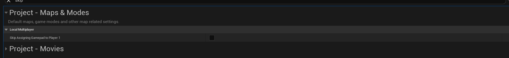
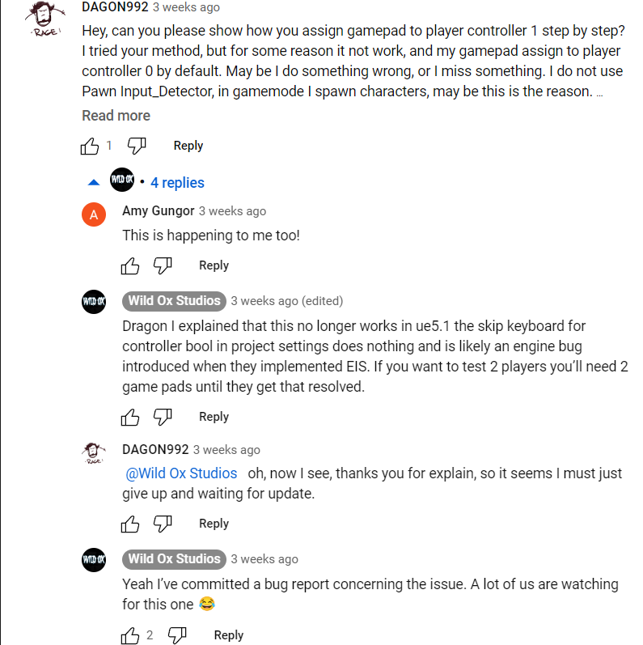
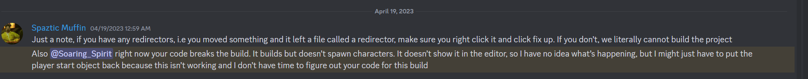
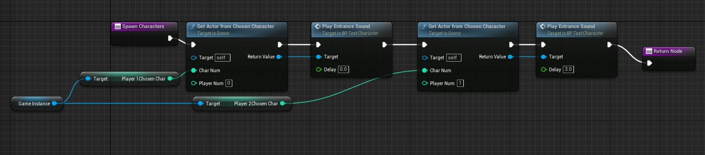
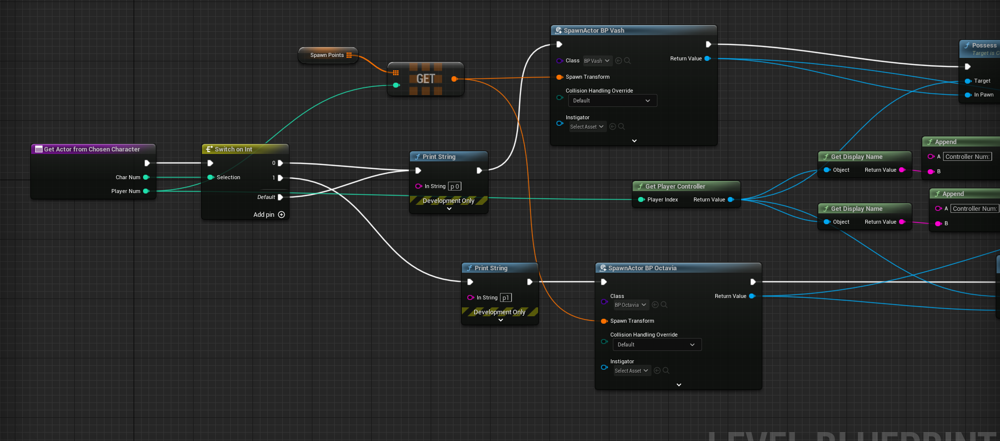
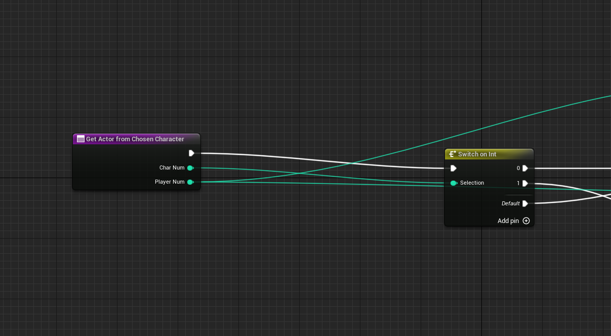

Retrospective
Steam Punch, a 2D platform fighter. I thought it was kinda a cool idea, so I was quite interested. My first duty as a programmer was handling UI. And by god, this project reminded me why I find UI tedious.
Disclaimer: Steam Punch was made in Unreal. Most of my experience is in Unity, but I had some basic knowledge of unreal. I thought it wouldn't be too bad, but I never worked on UI in Unreal. And let's just say...
there were a TON of hurdles
Let's start off with this: Unreal 5.1 apparently has several bugs regarding input.
One of the first things I did was making sure my code could detect user input. I went through various methods, and decided to use Unreal's new Enhanced Input System. It was supposed to be an improvement, allowing for more complex and smoother controls.
I followed the guide, and got my input working! Kinda.
See, Unreal was able to detect the input with Enhanced Input. However, it couldn't get the direction of the input. No matter which direction I tilted my joystick, it always registered the movement vector as (0,0).
I panicked. I couldn't really manage input if my code couldn't tell what the input was. I poured through various posts on the forums, and even consulted a few tutorials. Despite following them near perfectly, nothing seemed to work
Then I noticed, I didn't follow exactly. See, the tutorial I was consulting was for a slightly earlier version of Unreal. Their code was practically identical to mine, except instead of outputing a vector for the x and y axis, the older version of the function outputed two separate float values.
So in essence, I wasted a lot of time trying to debug my code only to learn that I couldn't really fix it
I relented and did a bit of a workaround. Instead of relying entirely on Enhanced Input, I simply used the system as a trigger. Then, I grabbed the actual directional vector through other blueprint methods. It was a bit messy and I didn't like it, but it worked.
While I worked on this, I received a message asking if I could get a 1 keyboard, 1 controller setup working. While our plan was to have both players use controllers, it would be hard to test 2 controllers due to Unreal's restrictions on what controllers it could work with. (Note: I spent hours trying to get a xbox controller emulator to work with my logitech controller, and only managed to get it to work sometimes).
I agreed, since I thought it wouldn't be problematic. After all, Unreal already has this function to help with that:
Except it didn't.
For the life of me, I could not get the controller to be assigned to Player 2. I started to panic, and spent hours looking over tutorials and the Unreal forums.
"What was wrong with my code?" I wondered. I didn't want to feel useless to the team. Already, I was behind schedule due to the previous issue. Frustration and self doubt began to cloud my mind. What. Was. Wrong?!
Oh. Thanks Unreal.
Now I was angry, tired, and way behind schedule. But at least I got my character selector up, and integrated it with the player spawning. It worked perfectly fine when I tested it, so there should be no issues...
Are you kidding me?
So I almost ruined our alpha with my changes. Thankfully, my changes were reverted so the alpha was still playable.
I was really curious as to why my code broke the game. I dug around and noticed that the code works fine...when the level it's associated with is the first level that is created. When loading in from a different level, the code breaks.
That answered what the trigger is. But it didn't answer why.
I got to work. I slowly dug through all my code and and mentally tracked the progress of the code running. Everything seemed fine, but maybe I missed something.
I started to insert print statements to determine where exactly the code goes wrong. After a long time, I found something.
The code above determines which character to spawn for each player. The code for the second player worked fine. However, the first player code had issues.
br> This image handles the actual spawning. Given the number id of the player and their chosen character, spawn the given character at a designated location. Simple enough.
However, for some reason, the chosen character wasn't being registered as 0 (which was the only character we had in the game at the time). Strange. Was it a timing issue caused by the level loading in that resulted in the chosen character being a null value perhaps?
No? Then what was it? The chosen character was 0. The parameter is equal to 0. So why wasn't the switch statement following the path for 0?
On a whim, I decided to drag the default pin to follow the same path as 0.
It worked.
"Oh so what was the value that player 1 was receiving?" I asked myself. I put a print statement to display the character number that lead to the default path.
It printed 0
Apparently passing data through levels changed the flavor of the 0 which the switch statement found too disgusting. Or something like that, since for some random reason it fixed itself in the beta version despite no additional changes being made to the code
At this point, I was extremely frustrated and burnt out on working on UI. But I couldn't even work on anything else in the project. Everyone else had already worked on the basics for various mechanics and controls, and having me try to help would either waste more time so I could figure out how they coded their stuff, or cause more issues due to not being familiar with what the others have coded.
I was stuck in a lose-lose situation. I offered to help the other programmers if they needed it but at that point I was dead weight.
In the end, I could only add to the UI elements by making the controls smoother, cleaning up the UI, and doing my best to make it independent from the device resolution.
A rough diagram showing the flow of controls for the UI. Note that as shown in the diagram, player 1 is the only one to control the main menu. Furthermore, "Start Game" can only be selected once both players have confirmed their character selection.
Honestly, the main lesson I learnt from this is to never, ever, assume your code is bug free. It doesn't matter how pristine it looks, how well you followed guides. It can randomly break for the sole reason of wasting your time.
Moving on to more useful and serious lessons, this project reminded me about my main weakness: fixation. If I didn't develop tunnel vision and insisted on doing things the "right way", I could have done a lot of the work faster, opening up opportunities for me to help the rest of my team.
I would still have to face the hurdle regarding the switch statement issue, but I could have caught that issue earlier and would still have time to contribute to other aspects of the project
Version control was fairly straightforward. Use Github to share our work and keep backups of previous versions. However, due to my screwup regarding the alpha, I ended up having to adopt to using a separate branch for my own work.
Overall, it was fine. Though I did notice that rarely, when pulling from the master branch, it sometimes didn't pull everything. Thankfully, this didn't really cause many issues outside of wasting a few minutes of my time.